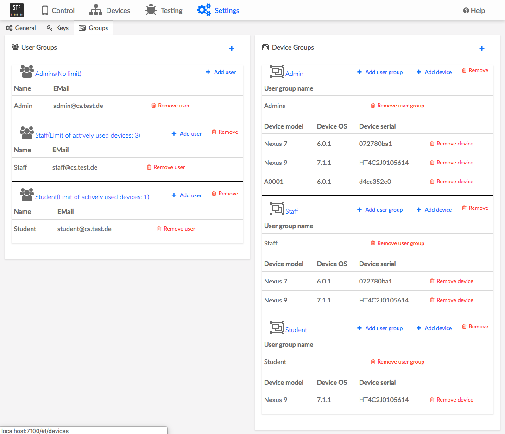
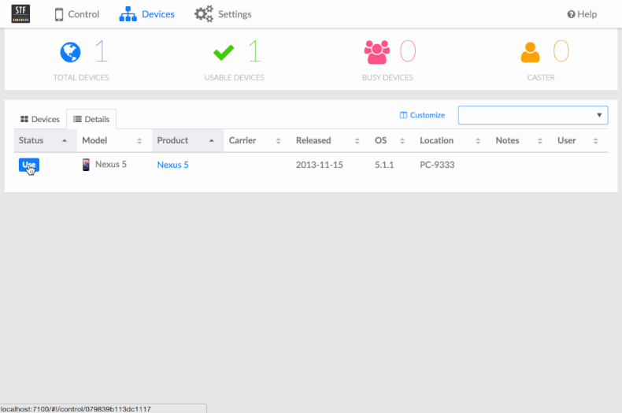

STF (or Smartphone Test Farm) is a web application for debugging smartphones, smartwatches and other gadgets remotely, from the comfort of your browser.
STF was originally developed at CyberAgent to control a growing collection of more than 160 devices. As of July 2016 development is mainly sponsored by HeadSpin and other individual contributors.
STF testing is an extension of the original STF application and was developed at the Software Engineering Chair.
The online demo is here available. For technical details have a look at our Wiki.
Note: For legal and security reasons the actual execution of Docker container is disabled and there are no physical devices connected,
as arbitrary applications could be executed.
STF testing features


- Advanced Testing Facilities
- Configure arbitrary testing setups to test
.apkfiles - Select from the set of available physical devices
- Configure and spawn emulators with arbitrary configuration
- Run test jobs using the testing configuration
- The testing takes place in Docker containers to leverage advantages of containerization like better resource management, repeatability and isolated testing environments
- The tool takes care of the communication from within Docker containers and physical and emulated devices
- Real-time feedback of the executing tests
- Configure arbitrary testing setups to test
- Advanced User And Device Management
- Extension of the very simple existing user and device management
- Users and devices can be managed in groups
- A limit of actively used devices per user group can be set
Original features

- OS support
- Android
- Supports versions 2.3.3 (SDK level 10) to 8.1 (SDK level 27)
- Supports Wear 5.1 (but not 5.0 due to missing permissions)
- Supports Fire OS, CyanogenMod, and other heavily Android based distributions
rootis not required for any current functionality
- Android
- Remote control any device from your browser
- Real-time screen view
- Refresh speed can reach 30-40 FPS depending on specs and Android version. See minicap for more information.
- Rotation support
- Supports typing text from your own keyboard
- Supports meta keys
- Copy and paste support (although it can be a bit finicky on older devices, you may need to long-press and select paste manually)
- May sometimes not work well with non-Latin languages unfortunately.
- Multitouch support on touch screens via minitouch, two finger pinch/rotate/zoom gesture support on regular screens by pressing
Altwhile dragging - Drag & drop installation and launching of
.apkfiles- Launches main launcher activity if specified in the manifest
- Reverse port forwarding via minirev
- Access your local server directly from the device, even if it’s not on the same network
- Open websites easily in any browser
- Installed browsers are detected in real time and shown as selectable options
- Default browser is detected automatically if selected by the user
- Execute shell commands and see real-time output
- Display and filter device logs
- Use
adb connectto connect to a remote device as if it was plugged in to your computer, regardless of ADB mode and whether you’re connected to the same network- Run any
adbcommand locally, including shell access - Android Studio and other IDE support, debug your app while watching the device screen on your browser
- Supports Chrome remote debug tools
- Run any
- File Explorer to access device file system
- Experimental VNC support (work in progress)
- Real-time screen view
- Manage your device inventory
- See which devices are connected, offline/unavailable (indicating a weak USB connection), unauthorized or unplugged
- See who’s using a device
- Search devices by phone number, IMEI, ICCID, Android version, operator, product name and/or many other attributes with easy but powerful queries
- Show a bright red screen with identifying information on a device you need to locate physically
- Track battery level and health
- Rudimentary Play Store account management
- List, remove and add new accounts (adding may not work on all devices)
- Display hardware specs
- Simple REST API